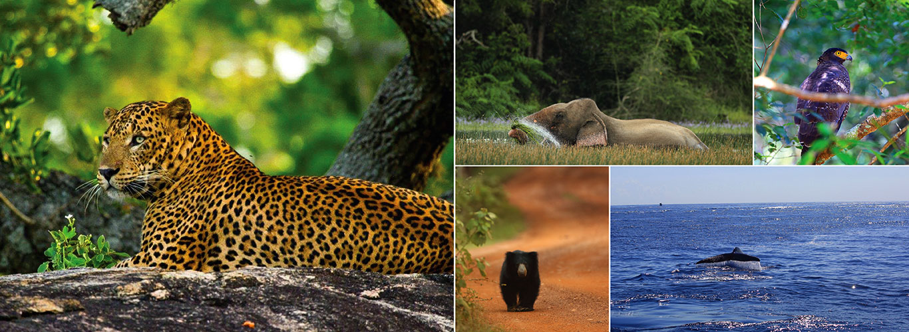
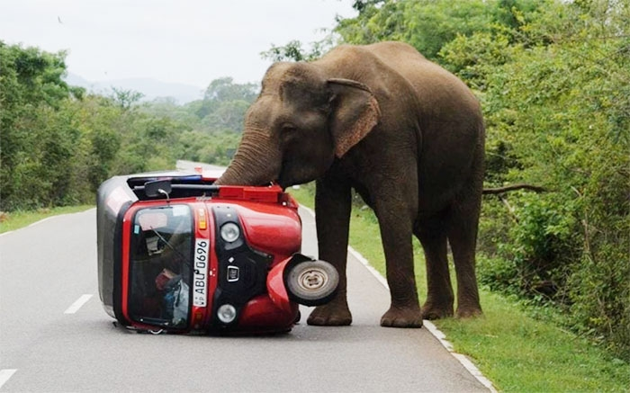

Overview

Sri Lanka, an island nation located in the Indian Ocean, is renowned for its rich biodiversity and diverse ecosystems. The country's wildlife is characterized by a fascinating array of species, many of which are endemic, meaning they are found nowhere else in the world. Sri Lanka's varied landscapes, including lush rainforests, dry plains, highland regions, and coastal areas, contribute to the remarkable diversity of its flora and fauna.
Here at Wild Wonders, we have a goal of boosting tourism after it was severly impacted due to the COVID-19 pandemic and the Islandwide protests which took place in 2022. Nature enthusiasts and wildlife lovers from around the globe will have the opportunity to discover a glimpse into the complex web of life that thrives across the Island's landscapes, making it a top destination for holiday travel.
Breathtaking Biodiversity
Sri Lanka is home to a remarkable variety of wildlife, with an estimated 123 species of mammals, 227 species of birds, 178 species of reptiles, and numerous amphibians and invertebrates.
The island's compact size has resulted in a high degree of endemism, making it a biodiversity hotspot of global significance.
Read MoreUnique Mammals
Sri Lanka boasts several unique mammalian species, including the elusive Sri Lankan leopard (Panthera pardus kotiya), which is the island's top predator.
Other notable mammals include the sloth bear, elephant, sambar deer, and various species of primates such as the toque macaque and purple-faced langur.
Read More
Avian Wonders
The avifauna of Sri Lanka is equally captivating, with a diverse range of bird species.
Endemic birds like the Sri Lanka junglefowl, Sri Lanka wood pigeon, and the vividly colored Sri Lanka hanging parrot add to the country's ornithological charm.
Read More
cProtected Areas and National Parks
To safeguard its unique biodiversity, Sri Lanka has established a network of protected areas and national parks. They are:
Yala National Park
Read MoreWilpattu National Park
Read MoreHorton Plains National Park
Read MoreThese are just a few examples where visitors can witness the country's wildlife in their natural habitats.
Conservation Challenges
Despite its ecological richness, Sri Lanka faces challenges related to:
- Habitat Loss and Fragmentation
- Land development
- Deforestation
- Human-Wildlife Conflict
- Increasing encroachment into wildlife habitats by humans
- Elephants often clash with local communities
Conservation efforts are underway to address these issues and ensure the long-term survival of the island's unique wildlife.